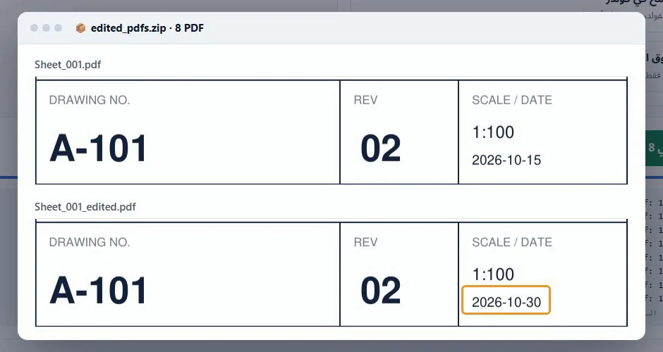

طريقة تعديل نص جدول العنوان في ملفات PDF كثيرة بدون CAD
صحّح تاريخاً أو حرف مراجعة أو حالة في جدول العنوان لكل لوحات PDF مرة واحدة، بدون فتح AutoCAD أو Revit وطباعة كل شيء من جديد.
ملفاتك بتفضل على جهازك. مفيش أي حاجة بتترفع.
الإجابة باختصار
افتح أداة تعديل نص PDF، وأضف الملفات، واسحب مربعاً حول الخانة في جدول العنوان، واكتب النص القديم والنص الجديد، ثم اضغط "استبدال". يتغير النص داخل المربع فقط، في كل الملفات، وتنزّل نسخاً معدّلة.
لماذا يأخذ تعديل صغير في جدول العنوان كل هذا الوقت
اللوحات مطبوعة PDF وجاهزة للإرسال، ثم يتغير تاريخ الإصدار، أو يجب أن تكون الحالة FOR CONSTRUCTION بدلاً من FOR APPROVAL. الحل المعتاد هو فتح كل لوحة في CAD وتعديل الخانة وطباعة اللوحات كلها PDF من جديد.
برامج تعديل PDF تستطيع تغيير النص، لكن ملفاً واحداً في كل مرة، والبحث والاستبدال في فولدر كامل غالباً يغيّر نفس الكلمات داخل الرسم نفسه، وليس في جدول العنوان فقط.
خطوة بخطوة
أضف ملفات PDF
اضغط "اختر ملفات PDF"، أو "اختر فولدر" لمجموعة لوحات كاملة. كل لوحة تضيفها ستتغير بنفس الطريقة.
حدد الخانة بمربع
على لوحة واحدة، اسحب مربعاً حول الخانة التي تريد تغييرها، مثلاً التاريخ في جدول العنوان. يتغير النص داخل هذا المربع فقط، فتبقى نفس الكلمات في باقي اللوحة كما هي.
اكتب النص القديم والجديد
اكتب النص المطلوب البحث عنه وما تريد استبداله به. تعرض الأداة في كم ملفاً وُجد النص داخل المربع.
اختر طريقة الحفظ
نزّل نسخاً (تبقى الملفات الأصلية كما هي)، أو احفظ النسخ في فولدر، أو اكتب فوق الملفات الأصلية في Chrome أو Edge.
استبدال
اضغط "استبدال". النص الجديد يأخذ حجم الخط والعرض والمكان الأصلي، فيبدو جدول العنوان كما هو.

استخدامات مناسبة
- تاريخ الإصدار أو تاريخ المراجعة على كل اللوحات.
- الحالة: من FOR APPROVAL إلى FOR CONSTRUCTION.
- رقم مشروع أو اسم عميل مكتوب خطأ.
- حرف المراجعة، عندما لم تتغير اللوحات.
إذا لم يظهر النص بشكل صحيح
النص الجديد يستخدم أقرب خط للأصلي تلقائياً. ومن "شكل النص" يمكنك اختيار الخط أو الحجم أو العريض أو المائل، أو زاوية النص للخانات المكتوبة رأسياً. اللوحات الممسوحة ضوئياً ليس فيها نص للاستبدال؛ استخدم ملف PDF المطبوع من CAD.
عدّل جداول العنوان الآن
مجاني، يعمل داخل متصفحك، ولوحاتك لا تخرج من جهازك أبداً.
افتح أداة تعديل نص PDF ←أسئلة شائعة
هل يمكن تعديل جدول العنوان في ملفات PDF كثيرة مرة واحدة؟
نعم. أضف كل الملفات، وارسم مربعاً واحداً حول الخانة، فيُستبدل النص داخل هذا المربع في كل الملفات.
هل يتغير أي نص آخر في اللوحة؟
لا. يتغير النص داخل المربع الذي رسمته فقط.
هل أحتاج AutoCAD أو Revit أو Acrobat Pro؟
لا. الأداة تعمل في متصفحك وتعدّل ملفات PDF مباشرة.
هل تُرفع لوحاتي؟
لا. متصفحك هو الذي يعدّل ملفات PDF على جهازك، ولا يُرسل أي شيء لأي سيرفر.
هل تعمل على اللوحات الممسوحة ضوئياً؟
لا. الصفحة الممسوحة ضوئياً صورة ليس فيها نص. استخدم ملف PDF المطبوع من CAD.